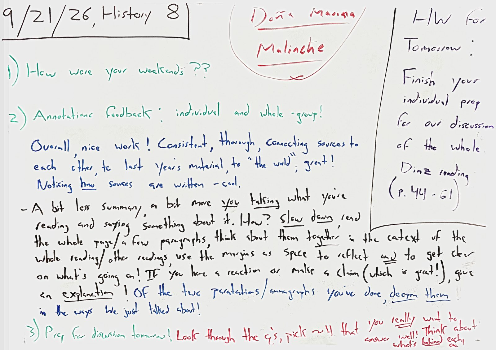

Monday, 9/21/26 MOST RECENT CLASS

Summary Of Class
- Talked weekends first, then I handed back your annotations: individual feedback plus whole-group pass on what's working well and what to try and improve on!
- Then we got ready for tomorrow, when the whole period is one discussion of the Diaz reading.
Homework: due Tuesday
Finish your individual prep for our discussion of the whole Diaz reading (pgs. 44-61). Look through the questions on the handout, pick about four that you really want to answer well, and think about what's behind each one.
Board As Text
Doña Marina
Malinche
1) How were your weekends??
2) Annotations feedback: individual and whole-group!
Overall, nice work! Consistent, thorough, connecting sources to each other, to last year's material, to "the world"; great! Noticing how sources are written – cool.
• A bit less summary, a bit more you talking what you're reading and saying something about it. How? Slow down, read the whole page/a few paragraphs, think about them together in the context of the whole reading/other readings, use the margins as space to reflect and to get clear on what's going on! IF you have a reaction or make a claim (which is great!), give an explanation! Of the two paratations/annographs you've done, deepen them in the ways we just talked about!
3) Prep for discussion tomorrow! Look through the q's, pick ~4 that you really want to answer well!! Think about what's behind each one
HW for Tomorrow: Finish your individual prep for our discussion of the whole Diaz reading (p. 44 - 61)